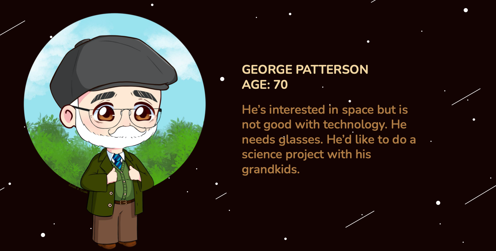
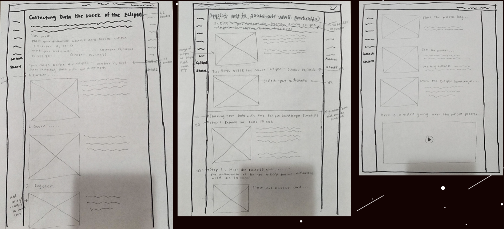
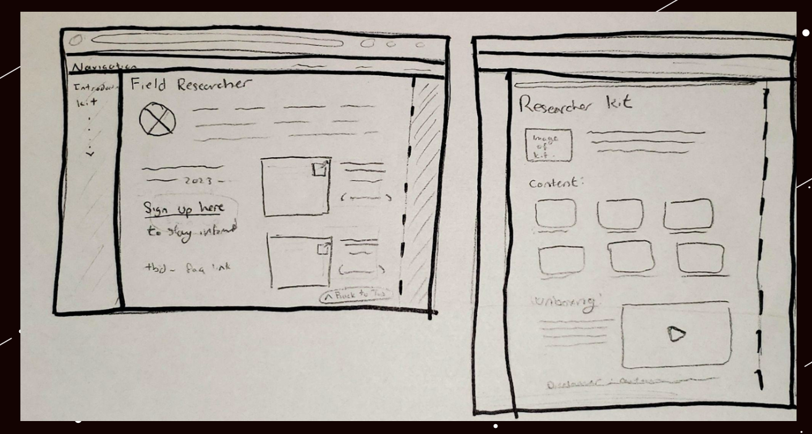
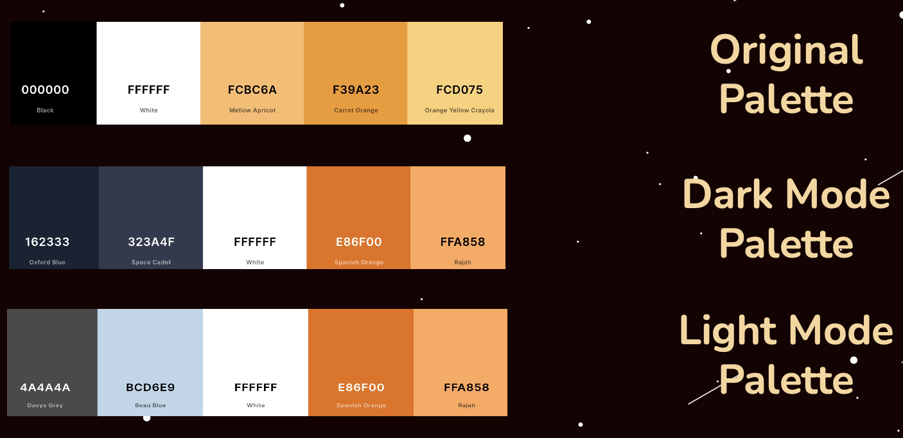
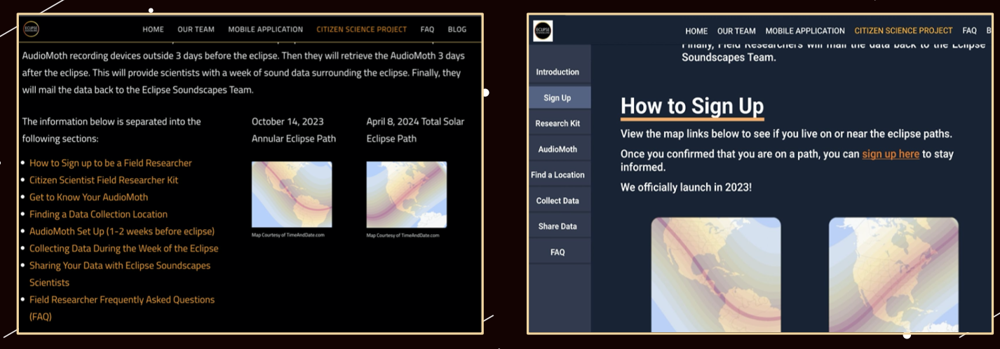
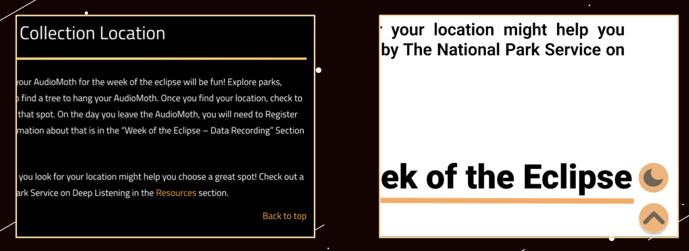
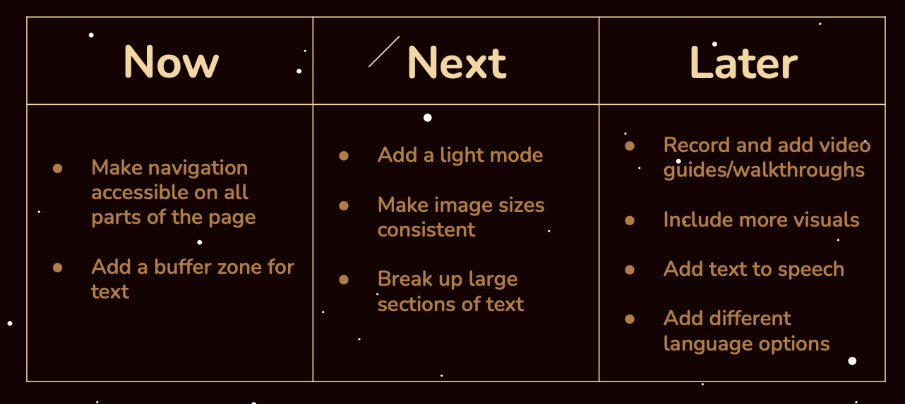

Eclipse Soundscapes Redesign
A 4-week user research project
Overview
Eclipse Soundscapes is a project supported by NASA's Space Science Education Consortium (NSSEC).
The project expands researchers' ability to study eclipse phenomena by providing everyday individuals with the equiptment to record the wildlife sounds in their area during the time of the eclipse.
Eclipses are generally known as a visual event, however, Eclipse Soundscapes sought to learn more about it's auditory impacts. This allowed them to deliver a multi-sensory experience that allowed everyone, including those who are visually impared, to witness the event.
The goal of this redesign is to make the Field Researcher Training Page (a hub for individuals who would like to collect data) more accessible and appealing to those aged 55 and older.
UX Researcher & Designer
Sally Estevez, Yufei Lin, Stephen Shadrach, Rhiannon Super
4 weeks
Learn the appeals of those 55+, and redesign the field researcher training page
Figma
Design Process

Empathize and Define
Research Goals
To better understand the needs of those individuals aged 55+ who were interested in collecting data, we began conducting interviews with the following goals in mind:
- Understand how users feel about the text, images, spacing, layout, and colors of the site
- Learn how they navigate the page
- Determine if the site is readable to users aged 55+
- Discover goals, needs, and frustrations of users while they actively navigate the page
Initial Problem Statement
The current field researcher training page is not accessible to older audiences (aged 55+).
Initial Site Impressions
- Long load times initially opening site and moving between pages
- Error establishing database connection - possibly an issue with Wordpress
- Directory is only at the top
- "Back to Top" is at the bottom of each section
- "Back to Top" cuts off top of page
- Too much scrolling on page
- Floating buttons cut off contacts
- Broken links
- Images are not consistent sizes, some being too small
- Font size is too small
- Text has no padding
- Not enough text/font variation
- Not enough space in between each section
- Very dark color
- Night Mode doesn't work
Interview Breakdown
We interviewed 12 users above the age of 55. We asked a series of questions before, during, and after having them interact with the Field Researcher Training Page. The goals of these interviews were to learn about our research goals and test if our initial impressions/assumptions of the site are also experienced by our target users.
Questions Asked:
- What is your preferred method of browsing the internet? (desktop, mobile, etc.)
- Do you lean towards text-based learning or visual learning?
- What is your preferred method when learning how to build or put something together?
- Is having an option to have text read aloud beneficial for you? Why?
- What is your first impression of the website?
- Why would you use this website?
- Is the purpose of the website clear enough? If yes, is there anything you think should be added? If not, which parts specifically are unclear or confusing?
- What part of the website do you think needs to be improved?
- How do you feel about the navigation on the website?
- What is the hardest part about navigating the website?
- How do you feel about the AudioMoth setup section? Which parts are easy or difficult to follow?
- What is your opinion on the data collection steps and timeline? Do you have any suggestions on how to improve it?
- What set of colors do you think will work for this website?
- Where do you prefer the navigation bar to be located?
- How do you feel about the text on this page? Why do you feel this way about it?
- What part of the website do you like? Why?
- What do you dislike about the website? Can you elaborate more on why you dislike that?
- Do any other websites come to mind where you really liked the layout of them? Why did you like it?
Interview Highlights
- 10 users prefer visual learning over text-based learning
- 12 users would benefit from text-to-speech
- 7 users prefer a lighter color scheme like blue or white (similar to facebook)
- 7 users believe navigating the website takes too much time
- 6 users want to see more audio/visual content (images, videos, recordings)
- 6 users believe the website can be organized better
User Persona
Using what was learned from research and interviews, a user persona was created to accurately represent who is being designed for. It was determined that the best course of action was to create a persona to reflect the needs and wants of Eclipse Soundscapes users aged 55+. This persona helped guide the project's decisions along the design process to make sure the solution is centered on our user and their experiences. Therefore, meet George:

Ideate and Prototype
Revised Problem Statement
The Eclipse Soundscapes Field Research Training Page's dark color scheme, jumpy navigation, and inconsistent content sizing makes it difficult to use and inaccessible to users aged 55+.
Prototype Goals
Based on the users' needs and wants, the following list of objectives was put together in order to accurately design with the community in mind and achieve maximum satisfaction. The lists of objectives are ordered from Required Features at the top of the list, to Nice to Have Features towards the bottom.
- Brighten up the color palette of the site, favoring blue and white where possible
- Move the navigation to the lefthand side of the screen
- Add breaks and padding to make the text more readable
- Fix the broken buttons including light/dark mode
- Make the image/video sizes consistent and add more text variation
Prototype Lo-Fi Wireframe Sketches
The approach for the user experience itself was based on the research conducted surrounding the needs and wants expressed by the community, and by following the prototyping goals to ensure that it met the expectations of the target audience and was a feasible solution to the problem.
 
Prototype Color Schemes
The original color scheme was noted by users as being too dark. They preferred blue and white as background colors for websites. The new color scheme was based off of their preferences and separated into a light and dark mode.

Final Product
Putting together everything that was learned, we were able to create a high fidelity prototype of the Field Researcher Training Page which would reflect the needs of our 55+ users.
Navigation Before (left) and After (right)

Back to Top Before (left) and After (right)

Usable Prototype
Suggested Client Plan of Action

Reflection and Next Steps
Through this project, I was able to conduct in-depth user research and redesign Eclipse Soundscapes Field Research Training Page through prototyping with both low and high fidelity wireframes to help form an accessible and usable interface for users aged 55+.
It was fun working on user research with a group rather than solo because I was able to learn new design styles, Figma interactions, user aquisition methods, and more from them.
Thanks to this partnered redesign of NASA's ARISA Labs Eclipse Soundscapes Field Researcher Training Page, I feel more confident in interviewing users, assessing user experiences, and prototyping interfaces with Figma.
Perform user testing to assess whether or not the prototype design is accessible to even wider audiences such as those fully visually impared or using screen readers. Consider removing all floating elements and re-working image, videos, and navigation to be more accessible.
Since this was a tag-team user research project from the client with multiple teams working on different site demographics, it is up to the client's discretion on which suggestions they want to implement.